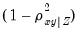

anticov Factor Views Display the anti-image covariance matrix based on the observed covariance matrix Syntax factor_name.anticov(options) The anti-image covariance is obtained by taking the inverse of the covariance matrix, and row and column scaling by the diagonals of the inverse. The diagonal elements of the matrix are equal to 1 minus the squared multiple correlations (SMCs). The off-diagonal elements of the anti-image covariance are equal to the negative of the partial covariances multiplied by , where are the remaining variables. Options p Print the matrix. Examples factor f1.ml group01 f1.anticov(p) estimates the factor analysis object F1, then displays and prints the anti-image covariance matrix. Cross-References See “Observed Covariances”. See also Factor::observed, Factor::partcor, Factor::smc.


 are the remaining variables.
are the remaining variables.